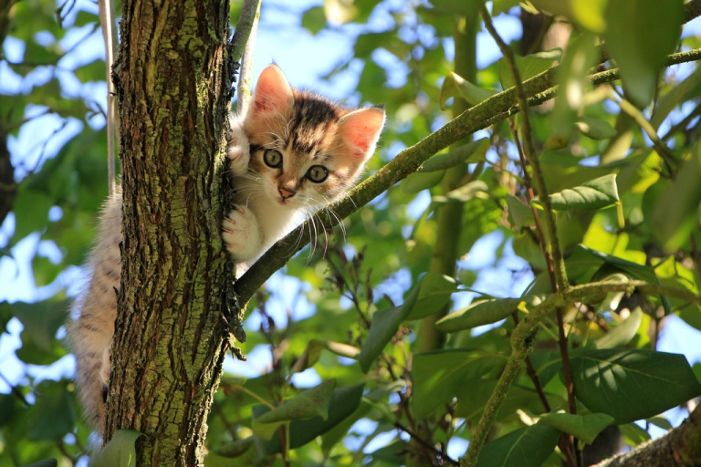
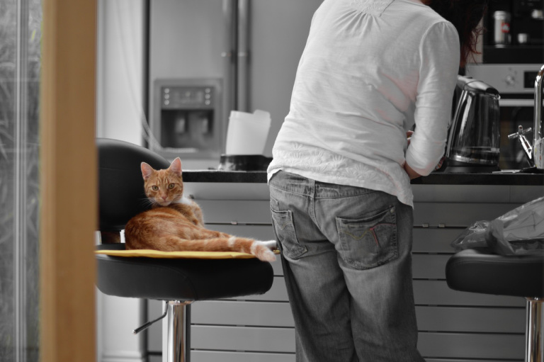

¿Por qué lo son?¿Por qué los amamos tanto?
Son increiblemente tiernos
Son más dociles si tenemos ya una mascota en la casa
Si hay niños en la casa la energia de un gatito puede entretenerlos por horas
Son increiblemente tiernos (eso nunca cambia)
Su presencia siempre se siente de una forma pasiva y acogedora con el simple hecho de que quieran acostarse a dormir a nuestro lado o que te hagan un mimo en los pies cuando pasen cerca tuyo
Son muy independientes y su compania para personas tranquilas es ideal